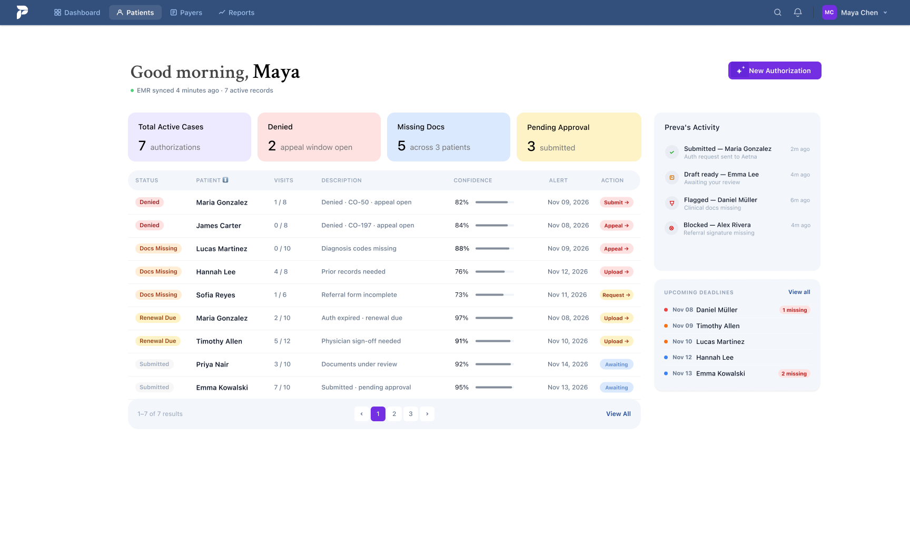
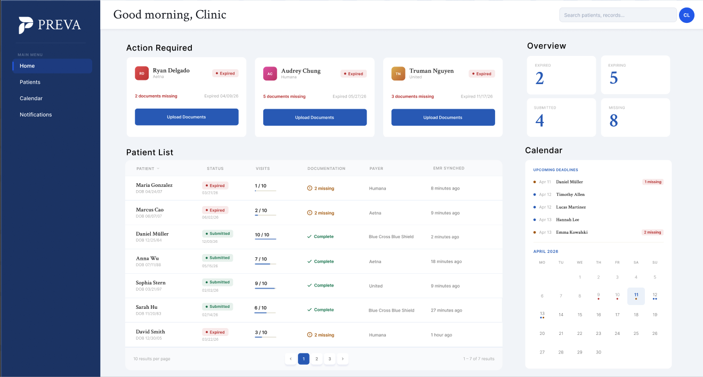
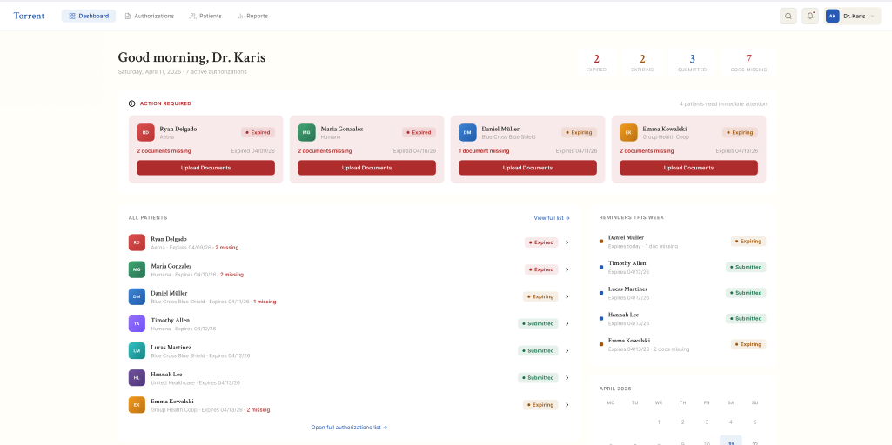
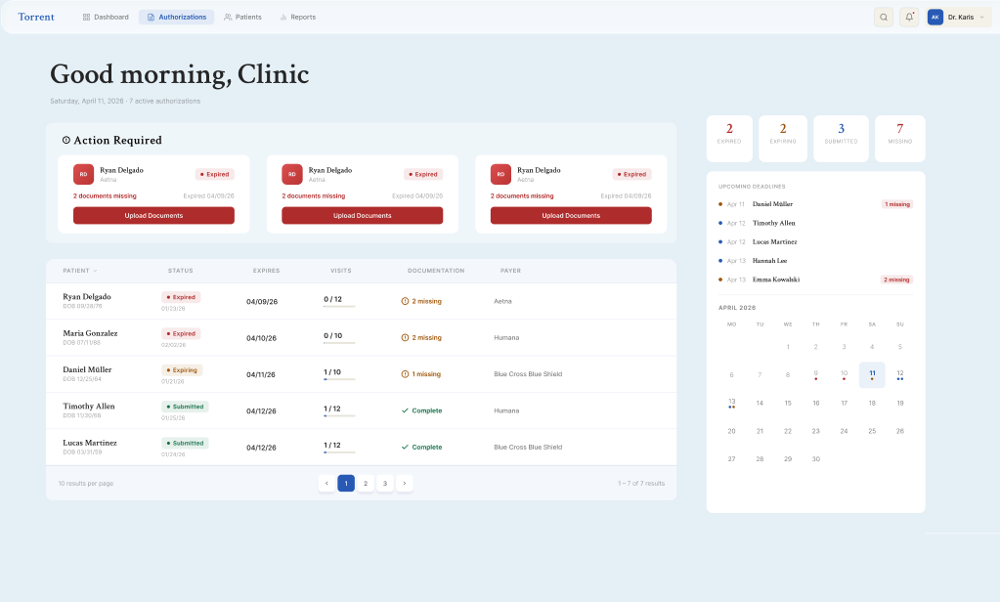
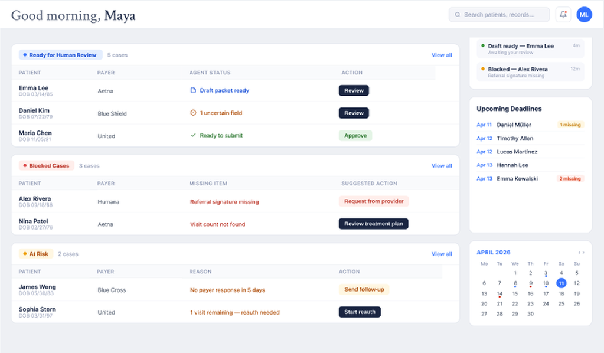
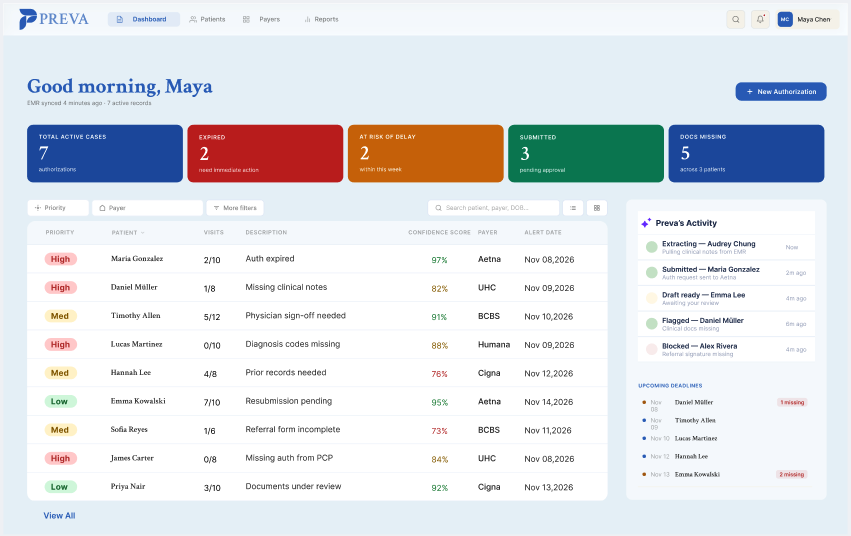
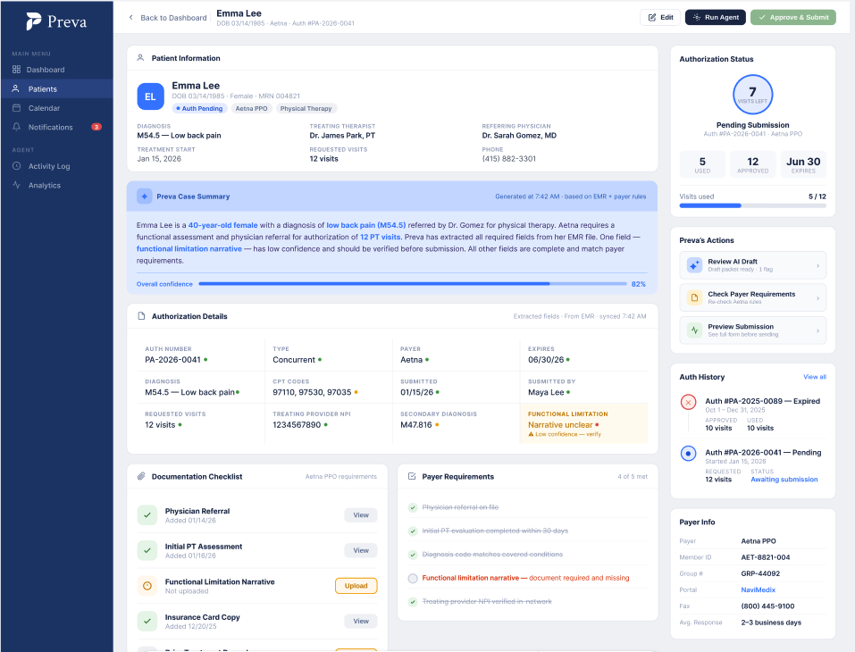
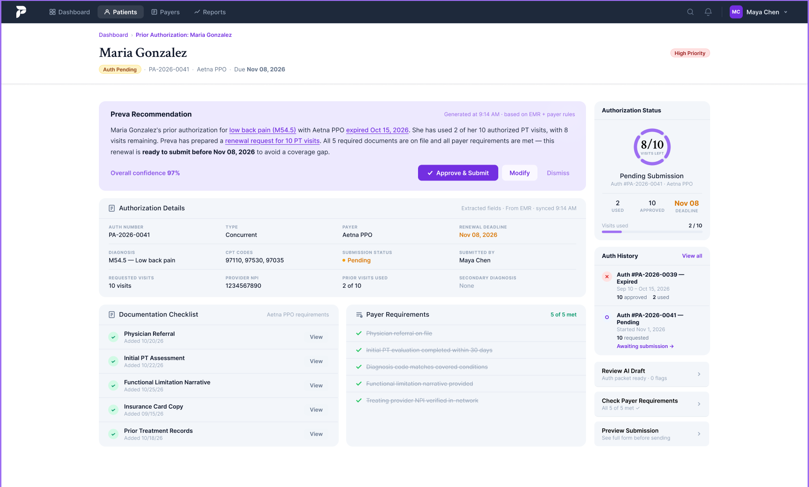
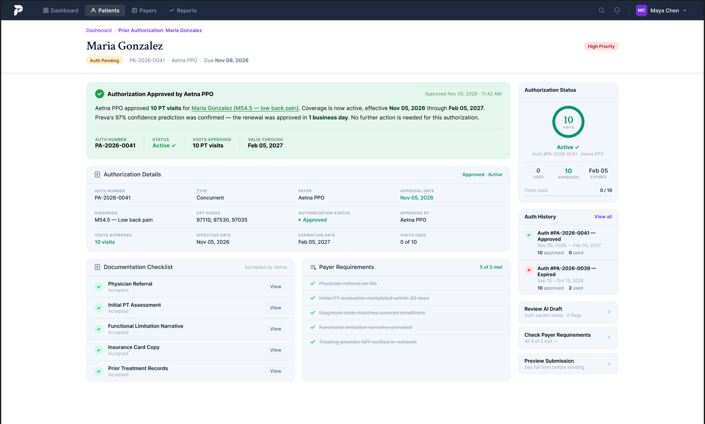
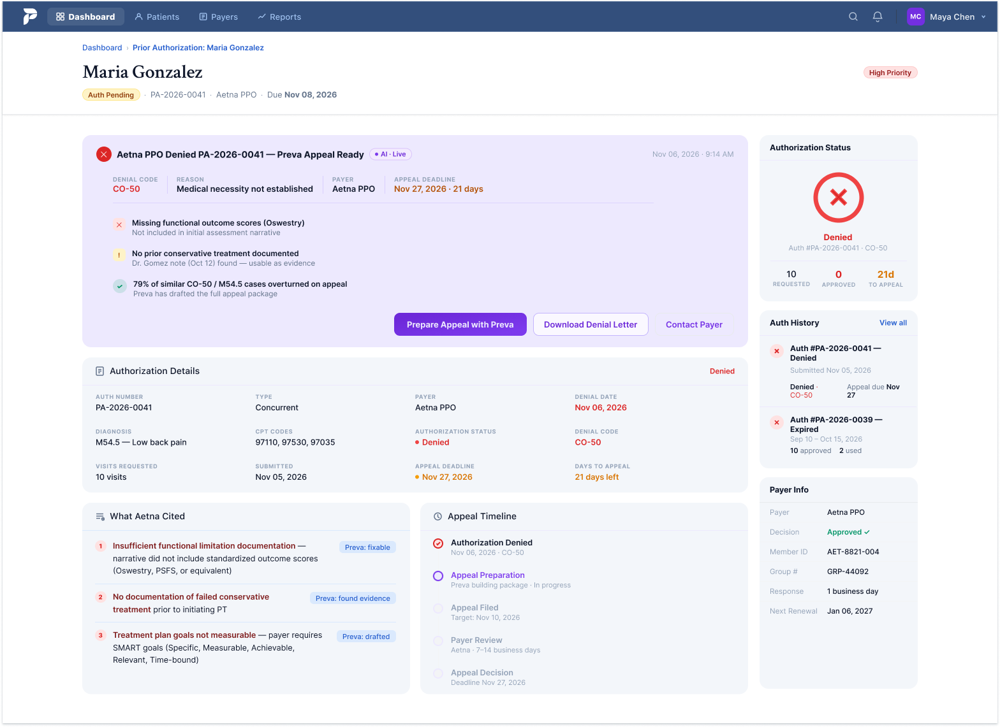

From Manual Authorization Tasks to
Human-Supervised AI Automation

Prior authorization is a time-consuming workflow
The process involves insurance rules, patient documentation, form preparation, submission, and follow-up. Clinic staff spend hours searching across documents, checking payer requirements, and manually tracking incomplete cases.

Understanding the challenges behind prior authorization
Method
Conducted qualitative interviews and informal discovery calls with clinic staff via phone and Zoom to understand their workflows and pain points.
Key takeaway
Staff need more than faster workflows — they need clarity, less manual work, and confidence before submitting requests.
"We don't always know what's missing until we're already preparing the request."
Visibility"Every insurance company asks for something different."
Complexity"We spend so much time copying information, but still have to check everything."
Workload & trustIllustrative paraphrases of research themes from clinic staff conversations; not verbatim participant quotations.
From manual tasks to supervised AI automation
How might we automate repetitive authorization work while keeping clinic staff informed and in control?
I designed Preva around three principles:
- Prioritize urgent work.
- Make AI actions transparent.
- Keep critical decisions under human control.
Defining human–AI responsibilities
I mapped each task by risk to determine what AI could automate and where staff review or approval was needed.
Automate repetitive preparation while keeping people in control of critical decisions.


Three iterations toward a more actionable, trustworthy experience
Exploring information hierarchy


Explored list, card, and calendar layouts to understand how staff navigate authorization requests.
Focus the dashboard on essential information rather than displaying everything at once.
Prioritizing actions


Simplified the dashboard to help staff identify urgent cases and required next steps.
Replace competing widgets with an action-focused layout.
Making AI activity visible


Introduced AI activity, case summaries, and confidence indicators to support supervised automation.
Make AI actions transparent and keep staff in control of critical decisions.
An actionable dashboard, transparent AI activity, and human-controlled decisions.
Designing for clarity, action, and trust
The final screens cover the full prior authorization workflow — from identifying urgent cases to resolving denials and reviewing AI activity.
Dashboard — Prioritize what matters
Urgency-based cases and AI activity help staff identify their next actions.
Case Detail — Review with confidence
Centralized information, documentation checks, and AI recommendations support informed decisions.

Submitted — Track progress
Submission status and activity history make authorization requests easier to monitor.

Approved — Confirm the outcome
Clear approval details and authorization dates help staff move forward with patient care.

Denied — Take the next step
Denial reasons, required evidence, and AI-assisted appeal preparation guide staff toward resolution. Appeal probability shown is simulated prototype data.

Designing AI experiences around trust
Preva taught me that effective AI design isn't just about automating tasks — it's about helping users understand, supervise, and trust the system.
What's next: Validate the workflow with clinic staff through usability testing and refine the AI review experience based on feedback.
← Back to work